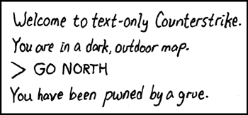

does any body play counter strike. its fun
Kinda. Only on my laptop though which I don't have on me at the moment.
I am sure there is a topic for this somewhere.
This also doesn't belong in Bash & Trash, unless you expected people to abuse you for spamming, which is possible.
This also doesn't belong in Bash & Trash, unless you expected people to abuse you for spamming, which is possible.
I'm pretty crap at it, and I tend to be the one getting blinded all the time (rather than anyone else, and no, I don't mean because of my lack of skill).
Ooooh, I absolutely love Counter-Strike. I play Condition Zero, however, which tends to be on the n00bier side, I admit, compared to 1.6. But Source is on the n00biest side, so I'm not all bad on those terms. 
Actually, I was just modifying a new forum I set up for a clan I joined yesterday: middle Finger salute [mFs]. I'm not a big fan of its title, but I like its community. I'm hoping the new forum I'm setting up will be wildly accepted as the old phpBB one was a yuck... phpBB yuck yuck. But since that forum was all today's work, no one has really gotten around to seeing it yet.
Actually, I was just modifying a new forum I set up for a clan I joined yesterday: middle Finger salute [mFs]. I'm not a big fan of its title, but I like its community. I'm hoping the new forum I'm setting up will be wildly accepted as the old phpBB one was a yuck... phpBB yuck yuck. But since that forum was all today's work, no one has really gotten around to seeing it yet.

... sorry. Couldn't resist.I play, I own. I play on a lot of zombie servers, infection and horde, because they're very fun. Other than that I play a lot, but I broke steam recently and when i re-installed it, all my games were gone but my hardrive still has them on it, so it says not enough space to install and my hardrive won't let me play them, sigh.